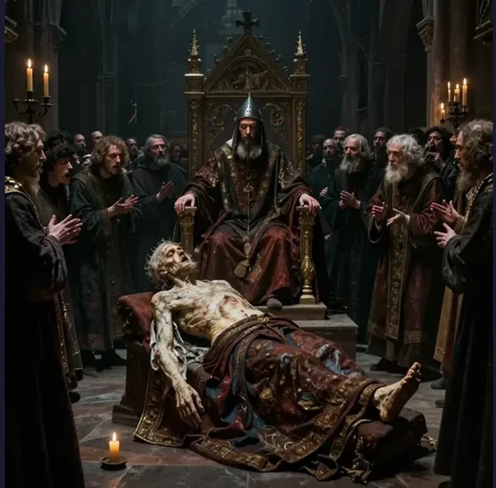

The Cadaver Synod: The Bizarre Trial Where a Dead Pope Was Dug Up and Condemned

Pope Stephen VI presiding over the Cadaver Synod of 897 — one of the most grotesque and surreal events in the history of the Catholic Church
It was January 897, in Rome. In the Basilica of St. John Lateran, the pope’s own church, a trial was about to begin. The judge was Pope Stephen VI, who is sometimes called Stephen VII. He wore the full robes of his office.
The man on trial was Pope Formosus. He had been pope from October 891 until his death on April 4, 896. There was one problem. Formosus had been dead for about nine months.
His body had been dug up from its tomb. It was carried into the church and dressed in the white and gold robes of a pope. Then it was propped up on a throne to face its accuser. A deacon, a junior church officer, was chosen to speak for the dead man and answer the charges.
The charges were perjury, which means lying after a promise to tell the truth. Formosus was also accused of becoming pope unlawfully. And he was accused of breaking church law by holding more than one bishop’s post at the same time. Stephen VI shouted at the body, and the deacon replied for it.
When the trial ended, Formosus was found guilty on all counts. His time as pope was declared void, as if it had never happened. His right hand, the hand used to give blessings, was cut off. His robes were taken away.
Every ordination and appointment he had made was declared invalid. An ordination is the ceremony that makes someone a priest or bishop. This threw the Church into chaos. Then the body was carried out and thrown into a common grave in a cemetery for foreigners and strangers. Weeks later it was dug up again and thrown into the Tiber River.
This event is called the Cadaver Synod. A synod is a church meeting. It is also known by a Latin name, the Synodus Horrenda, or Horrible Synod. It remains one of the strangest events in the whole history of the popes.
Why would a pope put a corpse on trial? To understand, we must look at Rome in the late ninth century. This time is sometimes called the Saeculum Obscurum, which means the Dark Age of the papacy. Popes came and went very fast. Most served only a few months or years. Then they were removed, jailed, or murdered.
Between 872 and 965, about two dozen popes were appointed. That is an average reign of less than four years. Between 896 and 904, there was a new pope about every year.
The papacy was not really a spiritual office then. It was a political prize. Rival Roman noble families fought over it. So did the Holy Roman Emperor and other Italian noble houses. They saw the papacy as a way to gain power and wealth.
The strongest families included the house of Spoleto, the Tusculani, and the Crescentii. They put popes in place and removed them at will. They treated the Chair of St. Peter like a political football. In this world, the Cadaver Synod was not a strange accident. It was an extreme example of the political war that had taken over the Church.
Pope Formosus (about 816–896) was not a villain. Most accounts say he was a capable and respected churchman. He was unlucky to be pope in one of the most unstable times in Roman history. He was born in Rome around 816. He rose through the Church under Pope Nicholas I (858–867).
In 864, Nicholas made Formosus the Bishop of Porto-Santa Rufina, a church district near Rome. Formosus was a skilled diplomat. He was sent on important missions to France in 866 and 867. There he made deals for the pope with the Frankish king, Charles the Bald.
His skills made him one of the best-known churchmen in Rome. But they also made him a target for his enemies.
In 872, after the death of Pope Nicholas I, Formosus was a leading candidate for pope. But he was passed over, first for Pope Adrian II and later for Pope John VIII. John VIII became a bitter enemy.
In 875, John VIII accused Formosus of plotting against the papacy and wanting the throne for himself. Formosus was excommunicated, which means thrown out of the Church. He fled Rome and found safety in Tours, in France.
Pope Marinus I forgave him in 883 and gave him back his post at Porto. He served as Bishop of Porto for more than twenty years. Then, in October 891, he was elected pope at about the age of 75.
As pope, Formosus made a fateful choice. In 896, he crowned Arnulf of Carinthia, King of East Francia, as Holy Roman Emperor. This made the powerful house of Spoleto furious. They had imperial plans of their own. They saw Arnulf as a threat to their hold on Italy.
When Formosus died on April 4, 896, the Spoleto group saw a chance for revenge. They wanted to punish not just the dead pope but everything he had done. That meant everyone he had appointed and every alliance he had made.
The year 896 was one of the most chaotic in papal history. Four men held the office in that single year. Formosus died on April 4. He was followed by Pope Boniface VI, who ruled for about fifteen days. He died, reportedly of gout, though some sources say he was forced out.
Next came Pope Stephen VI, the future judge of the Cadaver Synod. He was elected in May 896 with the backing of the Spoleto group. He served until August 897, when he was removed from office and killed. After him came Pope Romanus, who lasted only about four months, from August to November 897.
The quick changes show how fierce the contest between Roman families was. Each one installed its own pope and threw out the last one’s choice.
The Cadaver Synod took place in January 897 at the Lateran Basilica, one of the holiest places in Rome. Stephen VI had Formosus’s body taken from its tomb. It had been buried with full papal honors for about nine months.
The body was dressed in the robes Formosus had worn in life. These included the white papal robe, the pallium, which is a woolen band worn around the neck, and the papal tiara, or crown. It was then placed on a throne in the middle of the church, where a living accused man would stand.
The scene was strange and frightening. A dead pope sat in the finest robes of the Church. Around him were bishops, cardinals, and nobles. Stephen VI sat on his own throne, like a judge in a courtroom.
The charges came in three parts. First, Stephen VI said Formosus had lied under oath. He claimed Formosus had sworn never to return to Rome or seek the papacy after John VIII sent him away.
Second, he said Formosus had become pope unlawfully. Third, he said Formosus had broken church law. Formosus had been Bishop of Porto and then Bishop of Rome, which means pope. Moving from one bishop’s post to another was technically forbidden by the Church’s rules. This was called translation of sees.
The charges were not entirely baseless. Formosus really had been Bishop of Porto before he became pope. Whether he had properly given up that post was a real question of church law.
But the trial was not about law. It was about politics. If Formosus’s time as pope was invalid, Stephen VI and his Spoleto allies could cancel all of his appointments. They could also cancel the crowning of Arnulf of Carinthia as emperor. And they could replace Formosus’s friends with their own.
Nobody doubted how the trial would end. Stephen VI was both the prosecutor and the judge. The meeting was packed with his supporters. Formosus was found guilty on all counts.
The punishment was harsh and meant to shame him. First, the robes were stripped from the body. Then Stephen VI ordered that the right hand be cut off, specifically the three fingers used to give the papal blessing. This was a symbolic act. It was meant to destroy Formosus’s spiritual power.
The body was then dragged through the streets of Rome. This was a public show meant to humiliate the dead pope and his supporters. It was buried in a graveyard for foreigners and strangers. That was a deliberate insult to a man who had led the Catholic Church.
The cruelty did not stop there. Stephen VI declared that all of Formosus’s ordinations and appointments were invalid. Every priest he had ordained, every bishop he had consecrated, and every official he had appointed lost their office.
The result was a disaster. Hundreds of clergy suddenly found their authority canceled. Their sacraments, or holy ceremonies, were now in doubt.
Finally, weeks after the first burial, the body was dug up again and thrown into the Tiber River. It was the last act of disrespect in a campaign of punishment against a dead man. It shocked even the hardened politicians of ninth-century Rome.
The body of Formosus did not stay in the river for long, according to accounts from the time. The tenth-century writer Liutprand of Cremona says the body washed up on the riverbank. Monks found it and secretly saved the remains.
Formosus’s supporters took this as a sign of divine favor. They saw it as a miracle that proved the wronged pope was innocent. The monks reportedly kept the body hidden and treated it with the respect due to a martyr. A martyr is someone who suffers for their beliefs.
The story gave Formosus a place almost like a saint. Public sympathy turned strongly in his favor. People pictured the dead pope, abused by a living pope, floating in the river and then rescued by loyal monks. It was too powerful an image to ignore.
It turned Formosus from a political rival into a symbol of suffering and injustice. It made Stephen VI look not just ruthless but monstrous. That view would cost Stephen his throne and his life within months.
In the narrowest sense, the Cadaver Synod was a success for Stephen VI and the Spoleto group. Formosus was declared guilty. His appointments were canceled. The crowning of Arnulf was declared invalid.
But it was a terrible public relations disaster. A pope had shouted accusations at a corpse. The dead body had been mutilated and thrown in the Tiber. The people of Rome and the wider Christian world were horrified.
Even by the harsh standards of ninth-century Italian politics, the Cadaver Synod was seen as deeply offensive and sacrilegious, which means disrespectful to holy things. Public opinion turned sharply against Stephen VI. The very act meant to strengthen his power destroyed it instead.
The backlash came quickly. In August 897, less than eight months after the Cadaver Synod, Stephen VI was removed from power. We do not know exactly how it happened. Sources from the time suggest that a popular uprising in Rome and the schemes of Formosus’s supporters brought him down.
Stephen was thrown in prison. Soon afterward he was strangled in his cell. His reign began with the shocking sight of a corpse on trial. It ended with his own death at the hands of his enemies.
Pope Romanus followed him and served about four months before he too was removed. In November 897, Pope Theodore II was elected. He at once moved to undo the verdict of the Cadaver Synod.
Theodore II held a synod that canceled the Cadaver Synod and restored Formosus’s time as pope. He ordered that the remains be recovered and reburied with full papal honors in St. Peter’s Basilica. His reign lasted only twenty days, and he died in December 897.
But his successor, Pope John IX (898–900), confirmed the reversal. John IX held another synod. It formally canceled the Cadaver Synod and banned any future trials of the dead.
The story does not end there. In 904, Pope Sergius III (904–911) took the throne. He had been a supporter of Stephen VI and the Spoleto group during the Cadaver Synod.
Sergius III stood by the verdict of the Cadaver Synod. Once again he declared Formosus’s ordinations invalid. He confirmed Stephen VI’s condemnation of the dead pope.
The reversal of the reversal of the reversal made a tangle of law and religion. It took decades to sort out. Sergius III’s choice showed that the Spoleto group was still powerful. The political fights that led to the Cadaver Synod were far from over.
For years, popes and groups took turns condemning and honoring Formosus’s memory. The Cadaver Synod became a symbol of what was wrong with the medieval papacy. It stood for corruption, political tricks, violence, and the way spiritual power bowed to worldly power.
Where do we learn about the Cadaver Synod? Our main sources each have their own biases and limits. Liutprand of Cremona (about 920–972) was a Lombard historian and diplomat. He gives one of the fullest accounts in his book Antapodosis, which means “Book of Retribution.” He wrote it several decades after the event.
Liutprand supported the Holy Roman Emperor and was generally hostile to the papacy. That may have shaped how he showed the Cadaver Synod, as a terrible case of papal corruption.
The writings of Auxilius and Vulgarius were written by supporters of Formosus right after the synod. They are sympathetic to the dead pope and hostile to Stephen VI. The tenth-century list of popes, the Liber Pontificalis, also has some relevant entries.
Despite the biases, the basic facts are backed by several independent accounts. These facts are the digging up, the trial, the guilty verdict, the cutting of the hand, and the dumping of the body in the Tiber. Historians do not seriously dispute them.
The Cadaver Synod of 897 sounds like fiction, but it is very well recorded. A dead pope was dug up, dressed in robes, propped on a throne, and shouted at by his successor. His body was harmed, his good name was attacked, and his remains were thrown into a river.
The trial was political power dressed up as church justice. One group tried to cancel the acts of a rival by destroying his memory and undoing every appointment he made. The backlash was fast and harsh. Stephen VI was removed and strangled within months, and later popes reversed the verdict.
But the damage was done. The Cadaver Synod showed how corrupt the papacy had become in the late ninth century. It shows that even the most sacred institutions can be spoiled by political power.
It also shows how easily justice turns into revenge when the accused cannot speak in his own defense. Formosus had been dead for nine months. Could anything be fair about that trial?
References & Further Reading
Wikipedia: Pope Formosus — Biography of the pope whose corpse was put on trial
📚 Recommended Reading: The Bad Popes by E.R. Chamberlin (on Amazon) — As an Amazon Associate, we earn from qualifying purchases.
Editorial note: The Cadaver Synod is attested by multiple independent contemporary and near-contemporary sources, including Liutprand of Cremona’s Antapodosis, the Auxilius and Vulgarius manuscripts, and entries in the Liber Pontificalis. See our Editorial Policy.